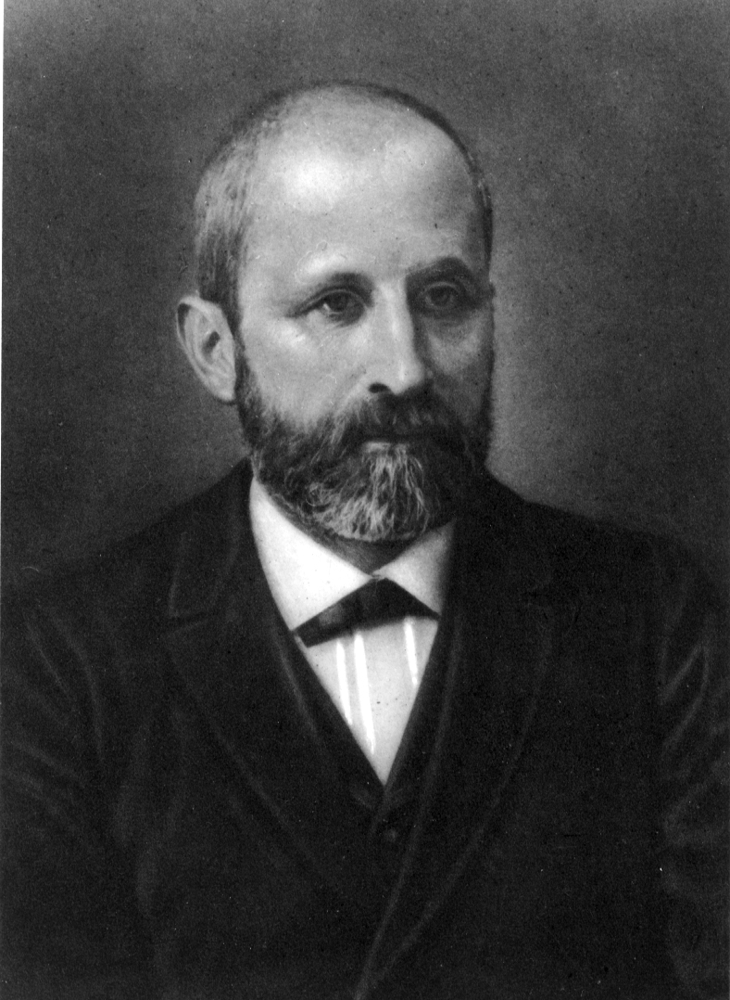

Miescher: Discovering Nucleic Acids

Summary
Miescher was working under Enrst Hoppe-Seyler at the University of Tubingen when he began collecting white blood cells from pus. He then lysed the cells and isolated a substance which he called "nuclei", which was high in phosphorus. "Nuclei" was what we call nucleic acid now.The Process
- Miescher's aim was to determine the chemical composition of cells. Miescher first attempted to use lymph nodes to do this; however, it was difficult to purify the lymphocytes (a specific type of white blood cell) and obtain sufficient quantities for analysis.
- Hoppe-Seyler suggested Miescher instead find leucocytes (general white blood cells). Miescher obtained his samples from the pus on fresh surgical bandages from a nearby clinic.
- Initially, Miescher invested himself on studying the different proteins that constituted the lecocytes because at the time, proteins were considered the most interesting and potentially enlightening material with regards to cell function.
- However, in the process of conducting these experiments, Miescher noticed that a substance precipitated from the solution when acid was added and dissolved again when alkali was added. He began designing a new protocol to isolate this precipitate from the proteins. His first protocol did not produce enough of the purified precipitate, so he created a second protocol.
-
In his second protocol, Miescher did the following:
- Added pepsin (a proteolytic enzyme that digests protein), which he obtained by washing pig stomachs with a mixture (fuming hydrochloric acid and water) and filtering the resulting solution many times.
- Removed the lipids from his leucocytes by washing them with alcohol (something he didn't do in his original protocol).
- Isolated the precipitate by letting the residual material digest with the pepsin solution. He repeated this step many times, replacing the pepsin solution every time.
- Steps 1-3 yielded a precipitate of nuclei without any attached cytoplasm formed. He mechanically removed the lipids, and filtered the remaining nuclei and washed them with water and alcohol to remove any remaining bits of protein.
- From this precipitate, Miescher extracted nuclei with the same alkaline extraction protocol he had developed from an earlier protocol and then adding acetic acid to cause the nuclei to precipitate.